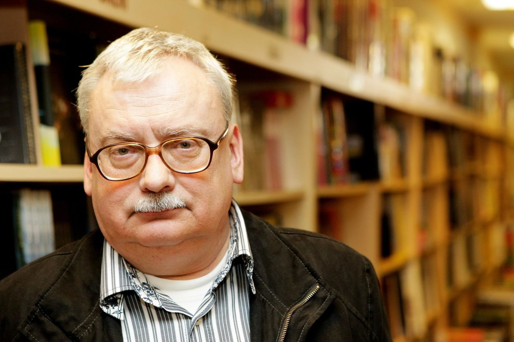

Анджей Сапковский
Конечно, я писал до 'Ведьмака'. В стол (точнее, не в стол, а для девушек, но это неважно) написал множество стихов
Анджей Сапковский
Анджей Сапковский родился в 1948 году в г. Лодзь(Польша). Окончил университет г. Лодзь, факультет внешнейторговли. По окончании университета работал в сфере торговли. Писательская деятельность поначалу была для пана Анджея не более чем хобби, но в 1986 он написал рассказ 'Wiedzmin' («Ведьмак»), который мгновенно обрел популярность и признаниеу читателей и критиков. Основной сюжет рассказа представляет собой переработку польской сказки о том, как сапожник победил терроризирующее округу чудовище и женился на принцессе. Сапковский с самого начала отказался от сапожника и сделал главным героем рассказа сурового профессионала - ведьмака Геральта, ставшего впоследствии одним из самых оригинальных и известных персонажей жанра фэнтези.
Однажды, в начале 90-х годов, я пришел на работу и увидел, что моя фирма обанкротилась…
Банкротство фирмы, на которую работал Сапковский, заставило его задуматься над продолжением своей писательской карьеры, и он взялся за написание новых произведений со всем возможным усердием. В 1990 году был издан сборник рассказов о Геральте получивший название 'Ostatnie zyczenie' («Последние желание»). В 1992 году вышел второй сборник: 'Miecz przeznaczenia' («Меч предназначения»). Всего эти книги включали в себя тринадцать рассказов о Геральте. Популярность ведьмака говорила о том, что автор не собирается останавливаться на достигнутом, и уже в 1994 году история ведьмака получила великолепное продолжение в романе 'Krew elfow' («Кровь эльфов»). Сапковский со свойственным ему юмором заметил, что не собирается продолжать писать о Геральте вечно, но польская литература имеет право хотя бы на один фэнтези-сериал.


Я сказал это три года назад: будет пять томов только потому, что мне хочется, чтобы польская фэнтези имела хотя бы одну сагу
Анджей Сапковский
Библиография:
Ведьмак Самостоятельные произведения:| N | Название игры | год выпуска |
|---|---|---|
| 1 | «Ведьмак» | 2007 |
| 2 | «Ведьмак 2: Убийцы королей». | 2011 |
| 3 | «Ведьмак 3: Дикая Охота» | 2015 |